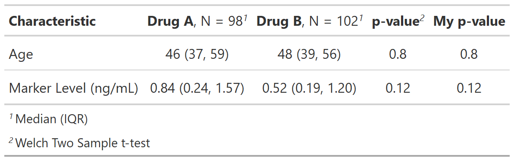
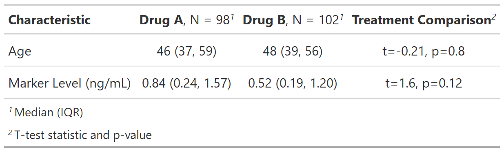
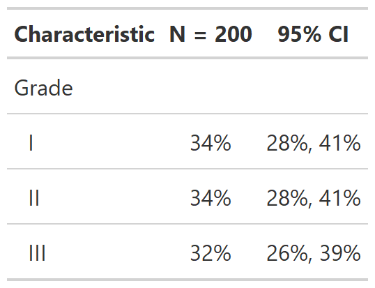

![[Experimental]](../help/figures/lifecycle-experimental.svg) The function allows a user to add a new column with a custom, user-defined statistic.
The function allows a user to add a new column with a custom, user-defined statistic.
| add_stat {gtsummary} | R Documentation |
The function allows a user to add a new column with a custom, user-defined statistic.
add_stat(
x,
fns,
fmt_fun = NULL,
header = "**Statistic**",
footnote = NULL,
new_col_name = NULL,
location = c("label", "level")
)
x |
|
fns |
list of formulas indicating the functions that create the statistic |
fmt_fun |
for numeric statistics, |
header |
Column header of new column. Default is |
footnote |
Footnote associated with new column. Default is no footnote (i.e. NULL) |
new_col_name |
name of new column to be created in |
location |
Must be one of |
The custom functions passed in fns= are required to follow a specified
format. Each of these function will execute on a single variable from
tbl_summary()/tbl_svysummary().
Each function must return a single scalar or character value of length one when
location = "label". When location = "level", the returned statistic
must be a vector of the length of the number of levels (excluding the
row for unknown values).
Each function may take the following arguments: foo(data, variable, by, tbl)
data= is the input data frame passed to tbl_summary()
variable= is a string indicating the variable to perform the calculation on
by= is a string indicating the by variable from tbl_summary=, if present
tbl= the original tbl_summary() object is also available to utilize
The user-defined does not need to utilize each of these inputs. It's
encouraged the user-defined function accept ... as each of the arguments
will be passed to the function, even if not all inputs are utilized by
the user's function, e.g. foo(data, variable, by, ...)
Example 1

Example 2

Example 3

# Example 1 ----------------------------------
# this example replicates `add_p()`
# fn returns t-test pvalue
my_ttest <- function(data, variable, by, ...) {
t.test(data[[variable]] ~ as.factor(data[[by]]))$p.value
}
add_stat_ex1 <-
trial %>%
select(trt, age, marker) %>%
tbl_summary(by = trt, missing = "no") %>%
add_p(test = everything() ~ t.test) %>%
# replicating result of `add_p()` with `add_stat()`
add_stat(
fns = everything() ~ my_ttest, # all variables compared with with t-test
fmt_fun = style_pvalue, # format result with style_pvalue()
header = "**My p-value**" # new column header
)
# Example 2 ----------------------------------
# fn returns t-test test statistic and pvalue
my_ttest2 <- function(data, variable, by, ...) {
tt <- t.test(data[[variable]] ~ as.factor(data[[by]]))
# returning test statistic and pvalue
stringr::str_glue(
"t={style_sigfig(tt$statistic)}, {style_pvalue(tt$p.value, prepend_p = TRUE)}"
)
}
add_stat_ex2 <-
trial %>%
select(trt, age, marker) %>%
tbl_summary(by = trt, missing = "no") %>%
add_stat(
fns = everything() ~ my_ttest2, # all variables will be compared by t-test
fmt_fun = NULL, # fn returns and chr, so no formatting function needed
header = "**Treatment Comparison**", # column header
footnote = "T-test statistic and p-value" # footnote
)
# Example 3 ----------------------------------
# Add CI for categorical variables
categorical_ci <- function(variable, tbl, ...) {
dplyr::filter(tbl$meta_data, variable == .env$variable) %>%
purrr::pluck("df_stats", 1) %>%
dplyr::mutate(
# calculate and format 95% CI
prop_ci = purrr::map2(n, N, ~prop.test(.x, .y)$conf.int %>% style_percent(symbol = TRUE)),
ci = purrr::map_chr(prop_ci, ~glue::glue("{.x[1]}, {.x[2]}"))
) %>%
dplyr::pull(ci)
}
add_stat_ex3 <-
trial %>%
select(grade) %>%
tbl_summary(statistic = everything() ~ "{p}%") %>%
add_stat(
fns = everything() ~ "categorical_ci",
location = "level",
header = "**95% CI**"
) %>%
modify_footnote(everything() ~ NA)